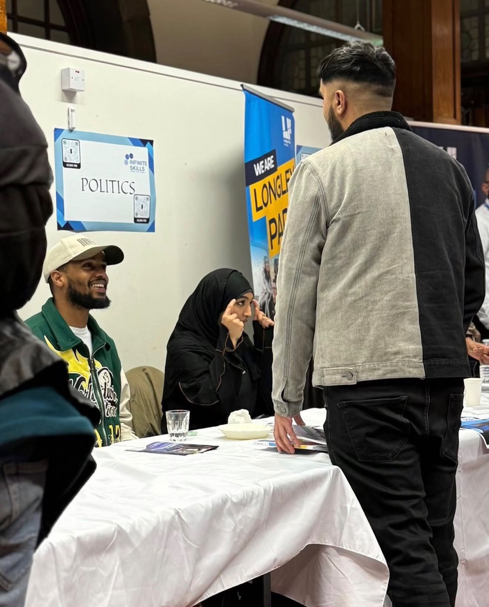

Testimonials
Endorsements from local council members and community partners.

images/council-1.jpg
"Innercityhealers is a fantastic example of how community-led initiatives can improve mental wellbeing, reduce isolation, and bring people together through the power of nature. Their work is creating healthier, stronger communities across Sheffield."

images/council-2.jpg
"Innercityhealers is making a real difference by creating safe, welcoming spaces where people from all backgrounds can connect, support one another, and build a stronger sense of belonging. Their commitment to community is truly inspiring."

images/council-3.jpg
"Innercityhealers demonstrates the positive impact that grassroots organisations can have in supporting wellbeing, encouraging positive engagement, and strengthening community resilience. Their work is an excellent example of people coming together to create lasting social value."